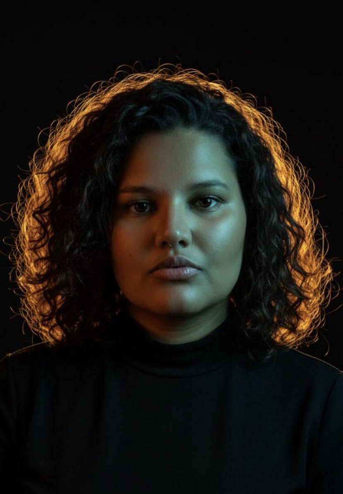

Experiência em pessoas · Olhar em tecnologia
Sou Cinthia Moreira, profissional de Customer Experience com passagem por fintechs e e-commerce. Trabalho com pessoas, dados e soluções — e há menos de um ano descobri o front-end. Estou em transição intencional para tecnologia, unindo meu olhar humano à linguagem do código.
Aberta a oportunidades que valorizem essa combinação.
Ver LinkedIn →
Ferramentas & Competências
Formação
Estácio — em andamento
CDC, LGPD, Lei do Superendividamento, ética em negociação
NPS, CSAT, CES e jornada do cliente
Estratégias digitais e relacionamento com cliente
Formação complementar
Contato
Estou aberta a conexões, oportunidades e trocas. Se o que você leu fez sentido, me encontra no LinkedIn.
LinkedIn →